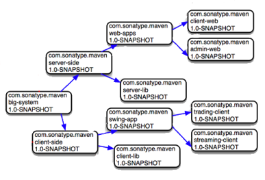

Apache Maven
an introduction
... an attempt to apply patterns to a project's build infrastructure in order to promote comprehension and productivity by providing a clear path in the use of best practices ...
Getting Started Guide
reference for those working with Maven for the first time, but is also intended to serve as a cookbook with self-contained references and solutions for common use cases
Philosophy of Maven
What is the intention of Maven? What does it want to address?
Maven: The Definitive Guide
reference book by http://www.sonatype.com
Maven was born of the very practical desire to make several projects at Apache work in the same way. So that developers could freely move between these projects, knowing clearly how they all worked by understanding how one of them worked. If a developer spent time understanding how one project built it was intended that they would not have to go through this process again when they moved on to the next project. The same idea extends to testing, generating documentation, generating metrics and reports, ... Apache Maven
Tool for build management of software, supports ...
- Build
- Software Lifecycle
- Documentation
- Reports
- Dependencies
- Sourcecodemanagement
- Release
- Distribution
- each maven project results in an artifact
- an artifactis a runnable/deployable package
What is Maven all about ? Tool for build management of software, supports ...
- Build
- Software Lifecycle
- Documentation
- Reports
- Dependencies
- Sourcecodemanagement
- Release
- Distribution
artifact gets uniquely identified by coordinates
- groups artifacts in family
- similiar to package in Java
- name of artifact
- corresponds to root directory of project in filesystem
type of artifact, predefined:
- jar
- java archive according to specification
- war
- java web archive according to specification
- ear
- enterprise application archive (JBoss)
- ...
- further package types, own extensions possible as well
version1.0-SNAPSHOTversion
<major>.<minor>.<incremental>-<qualifier>- Examples 1.3.5, 1.3-beta-01
-
Compare versions
- 1.2.3 1.0.2
- 1.2.3-alpha-2 1.2.3-alpha-10
CAUTION!! one character and everything gets compared lexographical !!- 1.2.3-alpha-2 1.2.3-alpha-10
- 1.2.3-alpha-02 1.2.3-alpha-10
1.0-SNAPSHOT has to be read as
...currently under development ...
remote/local repository resolves SNAPSHOT for uniqness
1.0-20140220-120003-1- ... which means ...
...deployed to repository shortly after 12:00 on februray 20th of 2014, first snapshot deployment...
- LATEST
- last version (snapshot AND releases) deployed to repository - date comparison
- RELEASE
- last deployed NON-SNAPSHOT version
define acceptable ranges, let the repository decide which version to take
Can you guess, which version will be resolved ?
- [1.0.0,1.0.999]
- [1.1.0,1.1.999)
- [1.1.0,1.2.4)
- [,1.2.3)
- [1.0.0,)
- 1.0.0
- 1.0.1
- 1.0.2
- 1.0.999
- 1.1.0
- 1.1.999
- 1.2.0
- 1.2.3
- 1.2.3-alpha1
- 1.2.4
-
using ONE configuration file
pom.xml - identified by coordinates
effective pom
effective pom is at runtime, multiple infos get aggregated
- global
- {maven.home}
/conf/settings.xml - user
- {user.home}
/.m2/settings.xml - project
- {project.home}
/pom.xml... including project inheritance - profiles
- {project.home}
/pom.xml...profiles - command line
- mvn ... -DskipTests=true ...
mvn help:effective-pom .... see online reference for further details
convention over configuration
configurable via pom, default values are:
- sources
-
./src/main- java code
./src/main/java - resources
./src/main/resources
- testing
./src/test/..- compiled code
./target/classes- package
./target
dependencies ... dependency groupIdorg.junitgroupId artifactIdjunitartifactId version4.8.11version scopetestscope dependency ... dependencies
... other software artifacts, this project depends on (runtime, compile, test, ...)
- dependencies are artifacts as well, identified via coordinates
- versions fully managed
- repositories take care of resolution
... manage versions and configuration of optional dependencies, often used together with inheritance (parent project)
dependencyManagement ...
dependencies ...
dependency
groupIdorg.junitgroupId
artifactIdjunitartifactId
version4.8.11version
dependency
... dependencies
dependencyManagement ...
dependencies ...
dependency
groupIdorg.junitgroupId
artifactIdjunitartifactId
... dependency
... dependencies
... type of dependency ...
- default, dependency (artifact) available in all classpaths
- part of result package, is included (e.g. war)
- available only in test classpath
- not part of resulting package (e.g. war)
- provided by JDK or container
- no transitive resolution
- not part of resulting package (e.g. war)
more scopes available: runtime, system ...see Apache Maven documentation
... to deal with jar hell
since a <dependency> is an artifact as well, with an own pom.xml including a <dependencies> section, it is possible to calculate transitive dependencies.
dependency groupIdorg.hibernategroupId artifactIdhibernateartifactId version3.2.7.GAversion dependencymvn dependency:tree -Dverbose=true
com.bisnode.sandbox:project:jar:1.0-SNAPSHOT +- ... \- org.hibernate:hibernate:jar:3.2.7.GA +- net.sf.ehcache:ehcache:jar:1.2.3 +- javax.transaction:jta:jar:1.0.1B +- commons-logging:commons-logging:jar:1.0.4 +- asm:asm-attrs:jar:1.5.3 +- dom4j:dom4j:jar:1.6.1 +- antlr:antlr:jar:2.7.6 +- cglib:cglib:jar:2.1_3 +- asm:asm:jar:1.5.3 \- commons-collections:commons-collections:jar:2.1.1
after packaging an artifact, it needs to be published in order for others to use it
local repository
- usually specific to user
- offers published artifact to other artifacts (same system, same user)
- local development
remote repository
- company wide (e.g. artifactory)
- offers published artifact to other developers/systems
- usually separation between RELEASE and SNAPSHOT versions
- artifactory opensource version
- ONE repository, no additional
repositoryentries inpom.xml - our repository structure:
- libs-release
- releases only, no snapshots
- libs-snapshot
- snapshots only, no releases
- proxies
- other external repositories, proxied by artifactory
- every project has same abstract phases of software build lifecycle
- one phase corresponds to an abstract part of a build scenario
- default lifecycles (
clean,defaultandsite) - usually lifecycle is defined by projects package
- calling a phase executes all phases including specified one
| validate | validate the project is correct and all necessary information is available to complete a build |
|---|---|
| ... | |
| generate-source | generate any source code for inclusion in compilation (e.g. out of xsd schema) |
| ... | |
| compile | compile the source code |
| ... | |
| test-compile | compile test sourcecode to test target directory |
| test | run compiled test sourcecode, using unit test framework |
| ... | |
| package | packaging in a distributable artifact (jar, war, ear, pom, ..) |
| ... | |
| install | publish packaged artifact to local repository |
| deploy | publish packaged artifact to remote repository |
Maven Plugins
... do the actual work !
- define goals: functional working packages
- binds goal to specific phase
- additional binding via configuration
pom.xml

child parent relation
- child inherits (some, not all) configurations from parent
- parent DOES NOT know about the child
parent groupIdcom.bisnodegroupId groupIdinformatics-parentgroupId groupId0.0.2groupId parent
see also POM Inheritance
parent child relation
 see also POM Aggregation
- reactor build: parent delegates each phase/goal to each child (module)
- child DOES NOT know about the aggregation (parent)
modules moduleserver-sidemodule moduleclient-sidemodule modules

maven site plugin ... mvn site
- i18n, custom css, add manual pages (apt, docbook, fml, ...)
- reporting plugins reports
- javadoc
- project infos
- checkstyle, pmd, findbugs
- release changes, SCM changes
- ...
Do you need to start from scratch ?
mvn archetype:generateDo you want to define your own archetype ?
- global settings
{maven.home}/conf/settings.xml: system wide configuration - actually maven instance (3.1.1, 3.0.4, 2.2.10, ...)- user settings
{user.home}/.m2/settings.xml: user specific, independent of maven version
What should be configured in settings and NOT in pom ?
.... those which should not be bundled to any specific project, or distributed to an audience
-
servercredentials for server access -
mirrorglobal remote repository proxy -
activeProfilesglobal profile activation
see also settings reference
... change settings dependening on the environment it is built. see profile in maven reference
- changes
- almost all entries in
pom(build, modules, repositories, dependencies, reporting, distributionManagement, ...) - activation
- circumstances under which profile is active.
Implicitly triggered via values of jdk, os, property, file or just their presence/absence.
Explicitly triggered via commandlin mvn clean package -PprofileA
- calling a plugin without specifying
groupId - defined in settings file
- default entries:
org.apache.maven.pluginsandorg.codehaus.mojo
example
settings ... pluginGroups pluginGrouporg.mortbay.jetty/pluginGroup /pluginGroups ... /settingsmvn org.mortbay.jetty:jetty-maven-plugin:run
excluding dependencies of your dependency
... intended to allow users to aggregate the project output along with its dependencies, modules, site documentation, and other files into a single distributable archive. see assembly plugin documentation
- assemble files, directories and/or dependencies into an archive format and publish along (same coordinates) with the artifact
addedclassifier{descriptor id}classifier - predefined assembly descriptors(e.g.
jar-with-dependencies) or write your own descriptor (Assembly Descriptor format)
example: yukon 2.0 application server
... is used to release a project with Maven,
saving a lot of repetitive, manual work. see release plugin documentation
- create (release) branches
- create a release
- cleanup, rollback releases
- versions update
- Check that there are no uncommitted changes in the sources
- Check that there are no SNAPSHOT dependencies
- Change the version in the POMs from x-SNAPSHOT to a new version (you will be prompted for the versions to use)
- Transform the SCM information in the POM to include the final destination of the tag
- Run the project tests against the modified POMs to confirm everything is in working order
- Commit the modified POMs
- Tag the code in the SCM with a version name (this will be prompted for)
- Bump the version in the POMs to a new value y-SNAPSHOT (these values will also be prompted for)
- Commit the modified POMs
- Checkout from an SCM URL with optional tag
- Run the predefined Maven phases/goals to release the project
(by default:deploy site-deploy)
- mvn dependency:analyze
- analyzes the dependencies of this project and determines which are:
- used and declared
- used and undeclared
- unused and declared
- mvn dependency:purge-local-repository
- tells Maven to clear dependency artifact files out of the local repository, and optionally re-resolve them.
- mvn dependency:tree
- displays the dependency tree for this project.
... see plugin page for more